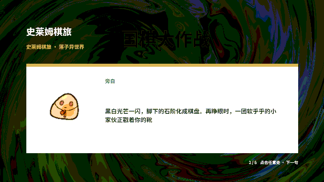
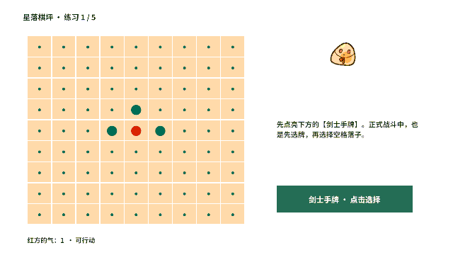
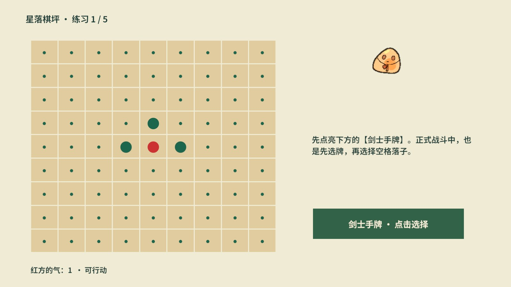
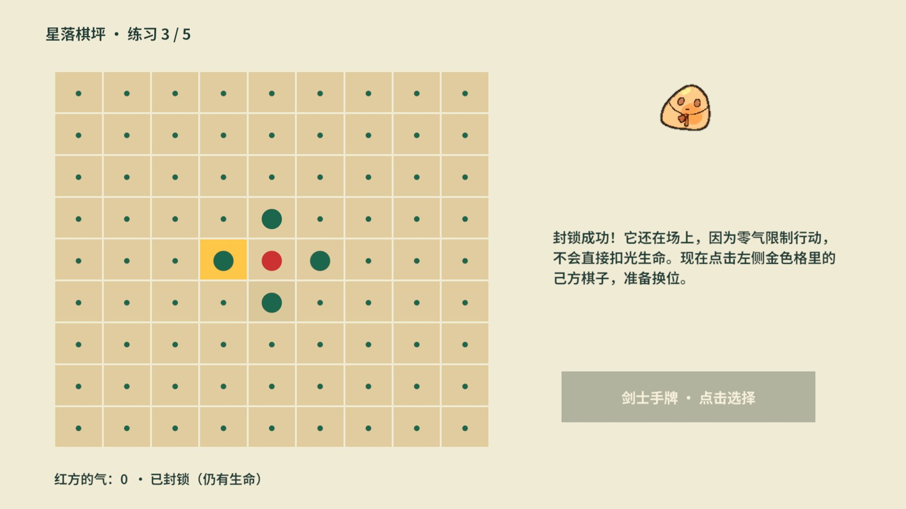
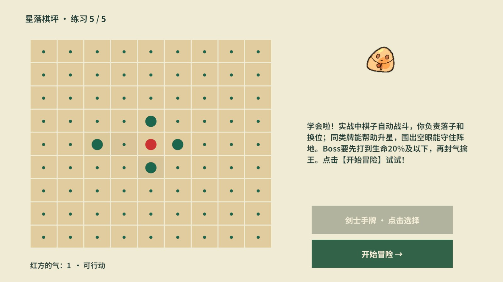
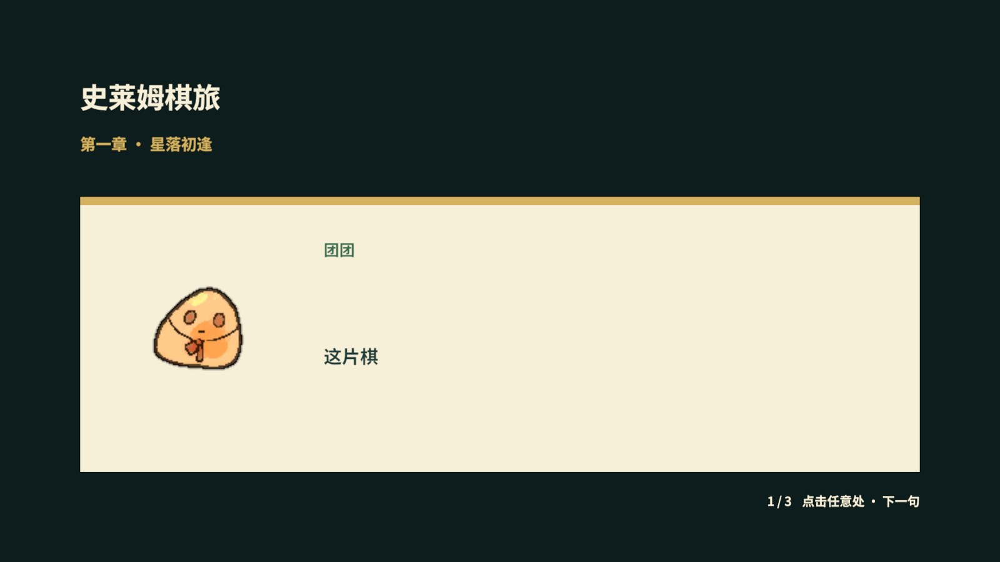
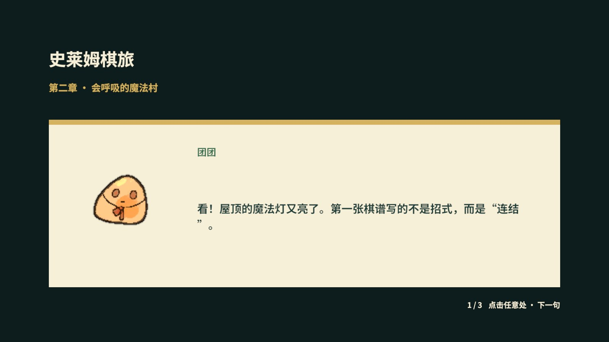
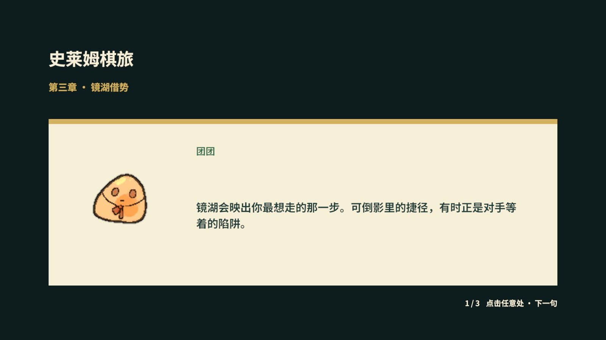
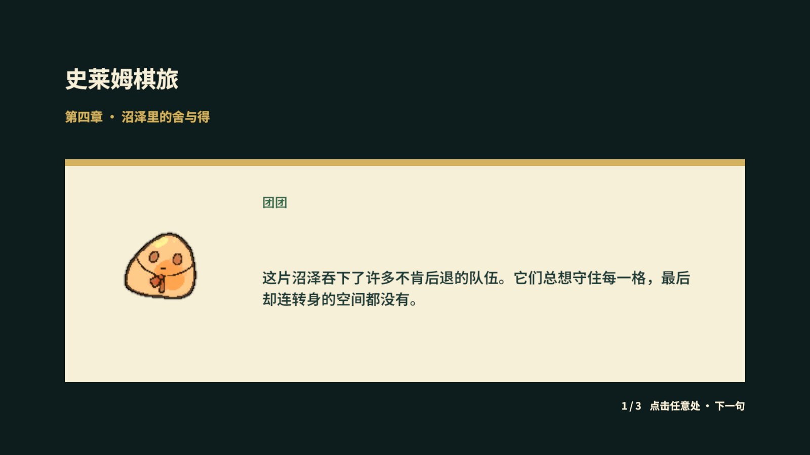

已由真实棋盘版本替代
本报告记录旧版独立UI棋盘，用户已要求改为GameScene真实教学。当前版本请查看新版实测报告；本页数字不代表新版覆盖。
验收结论
计划步骤通过
持久化与隔离断言
运行 Error/Exception
PC / Android各自AB数量
首次开场→教学引子→独立TutorialScene→第一章剧情→正式战斗已通过真实UI点击验证。错误格和提前结束被拒绝；封气后1→0，移动让气后0→1。完成标记仅在末句/实操完成时写入，完成后再启动直接进入大厅。
| 计划 | 步骤数 | 结果 |
|---|---|---|
| 剧情与教学首次流程直读验收 | 30 | 通过 |
| 剧情与教学真实AB及UI验收 | 110 | 通过 |
| 已完成教学不重播回归 | 2 | 通过 |
| 仅开场完成后的教学续接 | 4 | 通过 |
| 教学中断收尾验证 | 2 | 通过 |
资源门禁：7张图集、188张图片唯一覆盖；隐式重复依赖/循环依赖/漏标/重名/Android Shader错误均为0。六章背景仍分别自包含，新增故事资源未破坏章节包隔离。
交付行为与架构
冒险家穿越弈露大陆，与向导团团找回六页棋谱。六章沿现有场景顺序展开：星落棋坪、魔法村落、镜湖、死亡沼泽、冰雪极地、魔法神殿；主题逐步从连结、借势、取舍走向为世界留下变化的空间。
- StoryBook.asset是运行时文案真源，可在Inspector编辑。生成工具只在资产不存在时填种子，不覆盖已改文案。
- StoryView继承公开RevUIPart，由StoryPanel承载；DOTween按Unicode文字元素打字，点击整屏直接下一句。
- 向导复用项目萌新史莱姆，保留GUID迁入Art/Story并归唯一StoryGuide图集；打字节拍复用轻量Place落子音，已验证非空播放句柄。
- GameFlow仍是唯一场景控制者；读剧情期间冻结战斗计时与输入，章节普通回合不重播，重新进入章节会播放。
- TutorialLogic归独立RevScope域，复用BoardModel/GoRules；不将练习盘当战役胜利、不发奖励。全程四次核心实操，设计为约一分钟，未做用户耗时统计。
- 首次进度分开保存开场与教学；测试使用内存或随机临时键，不写生产剧情标记。
动态证据


真实AB画面

















业务证据逐步记录
计划中expect与until的具体条件见证据压缩包；下面列出实际响应。动作返回false的测试是预期拒绝，并非略过错误。
剧情与教学首次流程直读验收 · 30步
| 步骤 | 真实动作 | 响应 |
|---|---|---|
| 1 | story.state | {"screen": "Home", "transitioning": false, "blocked": true, "playing": true, "episode": "opening", "line": 1, "error": "", "openingComplete": false, "tutorialComplete": false, "isolated": true, "step": "none", "liberties": -1, "locked": false} |
| 2 | story.next | {"accepted": true} |
| 3 | story.next | {"accepted": true} |
| 4 | story.next | {"accepted": true} |
| 5 | story.next | {"accepted": true} |
| 6 | story.next | {"accepted": true} |
| 7 | story.state | {"screen": "Home", "transitioning": false, "blocked": true, "playing": true, "episode": "tutorial", "line": 0, "error": "", "openingComplete": true, "tutorialComplete": false, "isolated": true, "step": "none", "liberties": -1, "locked": false} |
| 8 | story.next | {"accepted": true} |
| 9 | story.next | {"accepted": true} |
| 10 | story.state | {"screen": "Tutorial", "transitioning": false, "blocked": false, "playing": false, "episode": "", "line": 2, "error": "", "openingComplete": true, "tutorialComplete": false, "isolated": true, "step": "SelectCard", "liberties": 1, "locked": false} |
| 11 | runtime.screenshot | 已保存真实画面 |
| 12 | tutorial.finish | {"accepted": false} |
| 13 | tutorial.cell | {"accepted": false} |
| 14 | tutorial.card | {"accepted": true} |
| 15 | tutorial.cell | {"accepted": false} |
| 16 | tutorial.cell | {"accepted": true} |
| 17 | story.state | {"screen": "Tutorial", "transitioning": false, "blocked": false, "playing": false, "episode": "", "line": 2, "error": "", "openingComplete": true, "tutorialComplete": false, "isolated": true, "step": "SelectAlly", "liberties": 0, "locked": true} |
| 18 | runtime.screenshot | 已保存真实画面 |
| 19 | tutorial.cell | {"accepted": true} |
| 20 | tutorial.cell | {"accepted": true} |
| 21 | story.state | {"screen": "Tutorial", "transitioning": false, "blocked": false, "playing": false, "episode": "", "line": 2, "error": "", "openingComplete": true, "tutorialComplete": false, "isolated": true, "step": "Ready", "liberties": 1, "locked": false} |
| 22 | runtime.screenshot | 已保存真实画面 |
| 23 | tutorial.finish | {"accepted": true} |
| 24 | story.state | {"screen": "Battle", "transitioning": false, "blocked": true, "playing": true, "episode": "chapter1", "line": 0, "error": "", "openingComplete": true, "tutorialComplete": true, "isolated": true, "step": "none", "liberties": -1, "locked": false} |
| 25 | runtime.screenshot | 已保存真实画面 |
| 26 | story.next | {"accepted": true} |
| 27 | story.next | {"accepted": true} |
| 28 | story.next | {"accepted": true} |
| 29 | story.state | {"screen": "Battle", "transitioning": false, "blocked": false, "playing": false, "episode": "", "line": 3, "error": "", "openingComplete": true, "tutorialComplete": true, "isolated": true, "step": "none", "liberties": -1, "locked": false} |
| 30 | runtime.logs | Error/Exception=0 |
剧情与教学真实AB及UI验收 · 110步
| 步骤 | 真实动作 | 响应 |
|---|---|---|
| 1 | story.state | {"screen": "Home", "transitioning": false, "blocked": true, "playing": true, "episode": "opening", "line": 0, "error": "", "openingComplete": false, "tutorialComplete": false, "isolated": true, "step": "none", "liberties": -1, "locked": false, "typing": false, "soundStarted": true, "visibleCharacters": 34, "guidePacked": true} |
| 2 | runtime.screenshot | 已保存真实画面 |
| 3 | ui.dump | 命中控件=1 |
| 4 | ui.click | 命令成功 |
| 5 | ui.dump | 命中控件=1 |
| 6 | ui.click | 命令成功 |
| 7 | ui.dump | 命中控件=1 |
| 8 | ui.click | 命令成功 |
| 9 | ui.dump | 命中控件=1 |
| 10 | ui.click | 命令成功 |
| 11 | ui.dump | 命中控件=1 |
| 12 | ui.click | 命令成功 |
| 13 | ui.dump | 命中控件=1 |
| 14 | ui.click | 命令成功 |
| 15 | story.state | {"screen": "Home", "transitioning": false, "blocked": true, "playing": true, "episode": "tutorial", "line": 0, "error": "", "openingComplete": true, "tutorialComplete": false, "isolated": true, "step": "none", "liberties": -1, "locked": false, "typing": true, "soundStarted": true, "visibleCharacters": 1, "guidePacked": true} |
| 16 | ui.dump | 命中控件=1 |
| 17 | ui.click | 命令成功 |
| 18 | ui.dump | 命中控件=1 |
| 19 | ui.click | 命令成功 |
| 20 | story.state | {"screen": "Tutorial", "transitioning": false, "blocked": false, "playing": false, "episode": "", "line": 2, "error": "", "openingComplete": true, "tutorialComplete": false, "isolated": true, "step": "SelectCard", "liberties": 1, "locked": false, "typing": false, "soundStarted": false, "visibleCharacters": 0, "guidePacked": true} |
| 21 | runtime.screenshot | 已保存真实画面 |
| 22 | tutorial.finish | {"accepted": false} |
| 23 | ui.dump | 命中控件=1 |
| 24 | ui.click | 命令成功 |
| 25 | ui.dump | 命中控件=1 |
| 26 | ui.click | 命令成功 |
| 27 | story.state | {"screen": "Tutorial", "transitioning": false, "blocked": false, "playing": false, "episode": "", "line": 2, "error": "", "openingComplete": true, "tutorialComplete": false, "isolated": true, "step": "SelectAlly", "liberties": 0, "locked": true, "typing": false, "soundStarted": false, "visibleCharacters": 0, "guidePacked": true} |
| 28 | runtime.screenshot | 已保存真实画面 |
| 29 | ui.dump | 命中控件=1 |
| 30 | ui.click | 命令成功 |
| 31 | ui.dump | 命中控件=1 |
| 32 | ui.click | 命令成功 |
| 33 | story.state | {"screen": "Tutorial", "transitioning": false, "blocked": false, "playing": false, "episode": "", "line": 2, "error": "", "openingComplete": true, "tutorialComplete": false, "isolated": true, "step": "Ready", "liberties": 1, "locked": false, "typing": false, "soundStarted": false, "visibleCharacters": 0, "guidePacked": true} |
| 34 | runtime.screenshot | 已保存真实画面 |
| 35 | ui.dump | 命中控件=1 |
| 36 | ui.click | 命令成功 |
| 37 | story.state | {"screen": "Battle", "transitioning": false, "blocked": true, "playing": true, "episode": "chapter1", "line": 0, "error": "", "openingComplete": true, "tutorialComplete": true, "isolated": true, "step": "none", "liberties": -1, "locked": false, "typing": true, "soundStarted": true, "visibleCharacters": 2, "guidePacked": true} |
| 38 | runtime.screenshot | 已保存真实画面 |
| 39 | ui.dump | 命中控件=1 |
| 40 | ui.click | 命令成功 |
| 41 | ui.dump | 命中控件=1 |
| 42 | ui.click | 命令成功 |
| 43 | ui.dump | 命中控件=1 |
| 44 | ui.click | 命令成功 |
| 45 | story.state | {"screen": "Battle", "transitioning": false, "blocked": false, "playing": false, "episode": "", "line": 3, "error": "", "openingComplete": true, "tutorialComplete": true, "isolated": true, "step": "none", "liberties": -1, "locked": false, "typing": false, "soundStarted": false, "visibleCharacters": 0, "guidePacked": true} |
| 46 | story.preview | 命令成功 |
| 47 | story.state | {"screen": "Battle", "transitioning": false, "blocked": true, "playing": true, "episode": "chapter2", "line": 0, "error": "", "openingComplete": true, "tutorialComplete": true, "isolated": true, "step": "none", "liberties": -1, "locked": false, "typing": false, "soundStarted": true, "visibleCharacters": 31, "guidePacked": true} |
| 48 | runtime.screenshot | 已保存真实画面 |
| 49 | ui.dump | 命中控件=1 |
| 50 | ui.click | 命令成功 |
| 51 | ui.dump | 命中控件=1 |
| 52 | ui.click | 命令成功 |
| 53 | ui.dump | 命中控件=1 |
| 54 | ui.click | 命令成功 |
| 55 | story.state | {"screen": "Battle", "transitioning": false, "blocked": false, "playing": false, "episode": "", "line": 3, "error": "", "openingComplete": true, "tutorialComplete": true, "isolated": true, "step": "none", "liberties": -1, "locked": false, "typing": false, "soundStarted": false, "visibleCharacters": 0, "guidePacked": true} |
| 56 | story.preview | 命令成功 |
| 57 | story.state | {"screen": "Battle", "transitioning": false, "blocked": true, "playing": true, "episode": "chapter3", "line": 0, "error": "", "openingComplete": true, "tutorialComplete": true, "isolated": true, "step": "none", "liberties": -1, "locked": false, "typing": false, "soundStarted": true, "visibleCharacters": 34, "guidePacked": true} |
| 58 | runtime.screenshot | 已保存真实画面 |
| 59 | ui.dump | 命中控件=1 |
| 60 | ui.click | 命令成功 |
| 61 | ui.dump | 命中控件=1 |
| 62 | ui.click | 命令成功 |
| 63 | ui.dump | 命中控件=1 |
| 64 | ui.click | 命令成功 |
| 65 | story.state | {"screen": "Battle", "transitioning": false, "blocked": false, "playing": false, "episode": "", "line": 3, "error": "", "openingComplete": true, "tutorialComplete": true, "isolated": true, "step": "none", "liberties": -1, "locked": false, "typing": false, "soundStarted": false, "visibleCharacters": 0, "guidePacked": true} |
| 66 | story.preview | 命令成功 |
| 67 | story.state | {"screen": "Battle", "transitioning": false, "blocked": true, "playing": true, "episode": "chapter4", "line": 0, "error": "", "openingComplete": true, "tutorialComplete": true, "isolated": true, "step": "none", "liberties": -1, "locked": false, "typing": false, "soundStarted": true, "visibleCharacters": 40, "guidePacked": true} |
| 68 | runtime.screenshot | 已保存真实画面 |
| 69 | ui.dump | 命中控件=1 |
| 70 | ui.click | 命令成功 |
| 71 | ui.dump | 命中控件=1 |
| 72 | ui.click | 命令成功 |
| 73 | ui.dump | 命中控件=1 |
| 74 | ui.click | 命令成功 |
| 75 | story.state | {"screen": "Battle", "transitioning": false, "blocked": false, "playing": false, "episode": "", "line": 3, "error": "", "openingComplete": true, "tutorialComplete": true, "isolated": true, "step": "none", "liberties": -1, "locked": false, "typing": false, "soundStarted": false, "visibleCharacters": 0, "guidePacked": true} |
| 76 | story.preview | 命令成功 |
| 77 | story.state | {"screen": "Battle", "transitioning": false, "blocked": true, "playing": true, "episode": "chapter5", "line": 0, "error": "", "openingComplete": true, "tutorialComplete": true, "isolated": true, "step": "none", "liberties": -1, "locked": false, "typing": false, "soundStarted": true, "visibleCharacters": 32, "guidePacked": true} |
| 78 | runtime.screenshot | 已保存真实画面 |
| 79 | ui.dump | 命中控件=1 |
| 80 | ui.click | 命令成功 |
| 81 | ui.dump | 命中控件=1 |
| 82 | ui.click | 命令成功 |
| 83 | ui.dump | 命中控件=1 |
| 84 | ui.click | 命令成功 |
| 85 | story.state | {"screen": "Battle", "transitioning": false, "blocked": false, "playing": false, "episode": "", "line": 3, "error": "", "openingComplete": true, "tutorialComplete": true, "isolated": true, "step": "none", "liberties": -1, "locked": false, "typing": false, "soundStarted": false, "visibleCharacters": 0, "guidePacked": true} |
| 86 | story.preview | 命令成功 |
| 87 | story.state | {"screen": "Battle", "transitioning": false, "blocked": true, "playing": true, "episode": "chapter6", "line": 0, "error": "", "openingComplete": true, "tutorialComplete": true, "isolated": true, "step": "none", "liberties": -1, "locked": false, "typing": false, "soundStarted": true, "visibleCharacters": 36, "guidePacked": true} |
| 88 | runtime.screenshot | 已保存真实画面 |
| 89 | ui.dump | 命中控件=1 |
| 90 | ui.click | 命令成功 |
| 91 | ui.dump | 命中控件=1 |
| 92 | ui.click | 命令成功 |
| 93 | ui.dump | 命中控件=1 |
| 94 | ui.click | 命令成功 |
| 95 | ui.dump | 命中控件=1 |
| 96 | ui.click | 命令成功 |
| 97 | story.state | {"screen": "Battle", "transitioning": false, "blocked": false, "playing": false, "episode": "", "line": 4, "error": "", "openingComplete": true, "tutorialComplete": true, "isolated": true, "step": "none", "liberties": -1, "locked": false, "typing": false, "soundStarted": false, "visibleCharacters": 0, "guidePacked": true} |
| 98 | story.preview | 命令成功 |
| 99 | story.state | {"screen": "Battle", "transitioning": false, "blocked": true, "playing": true, "episode": "ending", "line": 0, "error": "", "openingComplete": true, "tutorialComplete": true, "isolated": true, "step": "none", "liberties": -1, "locked": false, "typing": false, "soundStarted": true, "visibleCharacters": 40, "guidePacked": true} |
| 100 | runtime.screenshot | 已保存真实画面 |
| 101 | ui.dump | 命中控件=1 |
| 102 | ui.click | 命令成功 |
| 103 | ui.dump | 命中控件=1 |
| 104 | ui.click | 命令成功 |
| 105 | ui.dump | 命中控件=1 |
| 106 | ui.click | 命令成功 |
| 107 | ui.dump | 命中控件=1 |
| 108 | ui.click | 命令成功 |
| 109 | story.state | {"screen": "Battle", "transitioning": false, "blocked": false, "playing": false, "episode": "", "line": 4, "error": "", "openingComplete": true, "tutorialComplete": true, "isolated": true, "step": "none", "liberties": -1, "locked": false, "typing": false, "soundStarted": false, "visibleCharacters": 0, "guidePacked": true} |
| 110 | runtime.logs | Error/Exception=0 |
已完成教学不重播回归 · 2步
| 步骤 | 真实动作 | 响应 |
|---|---|---|
| 1 | story.state | {"screen": "Home", "transitioning": false, "blocked": false, "playing": false, "episode": "", "line": 0, "error": "", "openingComplete": true, "tutorialComplete": true, "isolated": true, "step": "none", "liberties": -1, "locked": false, "typing": false, "soundStarted": false, "visibleCharacters": 0, "guidePacked": true} |
| 2 | runtime.logs | Error/Exception=0 |
仅开场完成后的教学续接 · 4步
| 步骤 | 真实动作 | 响应 |
|---|---|---|
| 1 | story.state | {"screen": "Home", "transitioning": false, "blocked": true, "playing": true, "episode": "tutorial", "line": 0, "error": "", "openingComplete": true, "tutorialComplete": false, "isolated": true, "step": "none", "liberties": -1, "locked": false, "typing": true, "soundStarted": true, "visibleCharacters": 6, "guidePacked": true} |
| 2 | story.next | {"accepted": true} |
| 3 | story.next | {"accepted": true} |
| 4 | story.state | {"screen": "Tutorial", "transitioning": false, "blocked": false, "playing": false, "episode": "", "line": 2, "error": "", "openingComplete": true, "tutorialComplete": false, "isolated": true, "step": "SelectCard", "liberties": 1, "locked": false, "typing": false, "soundStarted": false, "visibleCharacters": 0, "guidePacked": true} |
教学中断收尾验证 · 2步
| 步骤 | 真实动作 | 响应 |
|---|---|---|
| 1 | story.state | {"screen": "Tutorial", "transitioning": false, "blocked": false, "playing": false, "episode": "", "line": 2, "error": "", "openingComplete": true, "tutorialComplete": false, "isolated": true, "step": "SelectCard", "liberties": 1, "locked": false, "typing": false, "soundStarted": false, "visibleCharacters": 0, "guidePacked": true} |
| 2 | runtime.logs | Error/Exception=0 |
验证范围与已知边界
开发期间修正了资源释放公开API的编译问题；测试计划的预检要求先进入Play再发现业务能力，已按该顺序执行。最终编译无错误、Play日志无Error/Exception，测试结束已退出Play，回到未修改的StartScene，移除测试进度开关。RevMCP常驻连接与控制台保持可用；编辑器保留真实AB模式。
原始计划、响应与构建证据保存在本机 .codex/work/，不随报告发布 · 可复现计划位于 Tests/StoryTutorialAutomation/ab.plan.json。